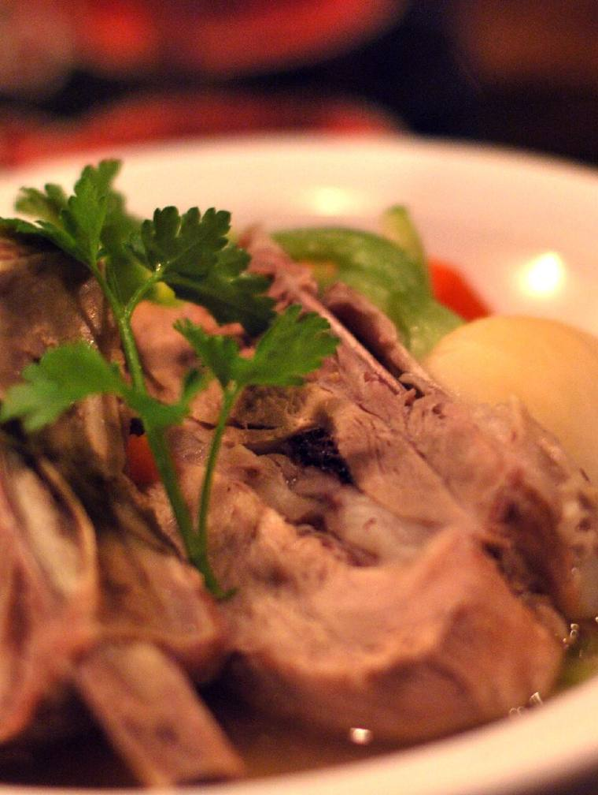

Cuisine française

Cuisine française
Pot-au-feu
Préparation : 30 min
Cuisson : 3 h 30
Ingrédients (pour 6 personnes)
- 2,5 kg de bœuf (gîte, macreuse, jumeau, paleron)
- 6 os à moelle
- 800 g de poireaux
- 1 kg de carottes
- 500 g de navets
- 3 oignons
- clous de girofle
- 600 g de pommes de terre
- 1 bouquet garni
- gros sel, poivre
Quantités adaptées. Les temps de cuisson ne sont pas recalculés.
- Blanchir les viandes quelques minutes en écumant, jeter l’eau et rincer.
- Remettre la viande, couvrir d’eau 5 cm au-dessus, ajouter bouquet garni et gros sel, cuire 2 heures à feu doux.
- Ajouter carottes, navets, poireaux ficelés et oignons piqués de girofle, cuire 1 heure.
- Ajouter les os à moelle pour 20 minutes. Cuire les pommes de terre à part avec un peu de bouillon.
- Servir le bouillon à part, avec pain grillé, fleur de sel, moutarde et cornichons.
D’après le Guide Hachette des vins. Texte reformulé.